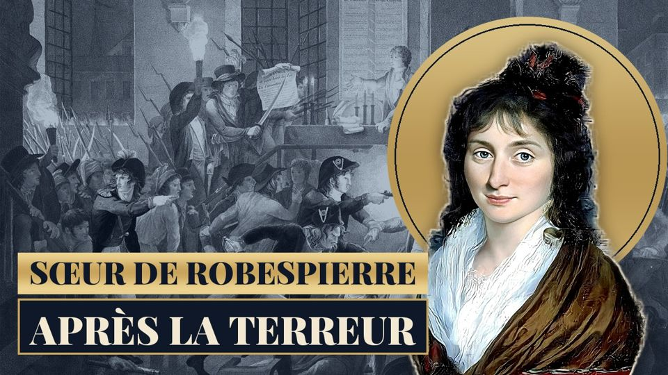
I1760 · 1834
Charlotte Robespierre
Quarante ans sous un faux nom. Il a fallu sa mort pour que ses voisins apprennent qui elle était.
La sœur de Robespierre, les fils cachés de Napoléon, les enfants de Dreyfus, la fille de Raspoutine… Neuf héritiers que la chute a laissés derrière elle, réunis dans un dossier illustré de 193 pages. Dont quatre récits inédits.
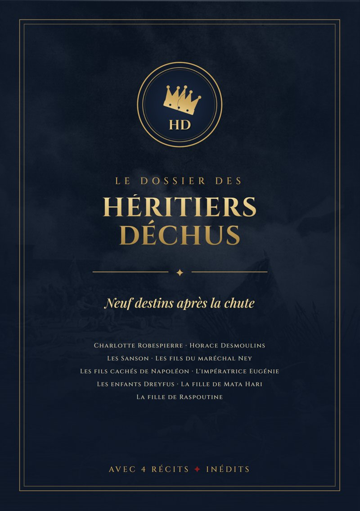
Pendant quarante ans, les voisins de la rue de la Fontaine ont salué une vieille femme maigre et très droite qu'ils appelaient madame Carraut.
Elle meurt le 1er août 1834, au premier étage du numéro 3. Le lendemain, l'état civil inscrit un tout autre nom, et l'émoi est tel que deux voisins doivent aller chez le notaire attester son identité.
Son vrai nom : Marie-Marguerite-Charlotte de Robespierre.
Quarante ans plus tôt, trois jours après l'exécution de ses deux frères, elle avait juré devant un comité qu'elle les aurait dénoncés. Puis elle avait vécu sous un nom d'emprunt, avec un secours versé par le ministère de Fouché, l'un des hommes qui avaient fait tomber Robespierre. Pourquoi lui payait-on de quoi vivre ? Et pourquoi, dans l'enveloppe cachetée retrouvée chez son notaire, a-t-elle fini par écrire le contraire de ce qu'elle avait juré ?
Ce n'est que la première page du premier chapitre. Il y en a neuf.
De la Terreur à la révolution russe, neuf vies que les livres d'histoire ont laissées dans l'ombre de leurs parents. Chacune racontée de bout en bout, avec ce qui n'a jamais tenu dans une vidéo.

IQuarante ans sous un faux nom. Il a fallu sa mort pour que ses voisins apprennent qui elle était.
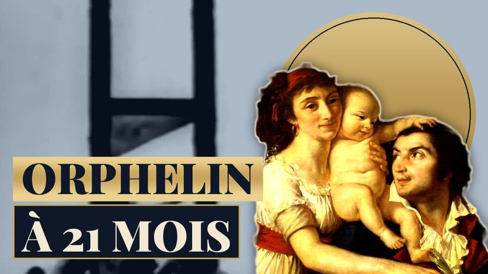
IIINÉDITSes deux parents guillotinés avant ses deux ans. Sa tombe se trouve en Haïti.
Six générations à l'échafaud. Le dernier a fini par mettre la guillotine en gage.
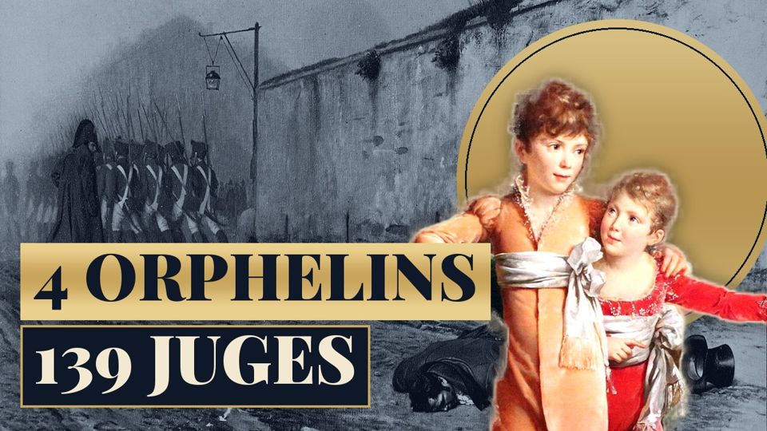
IVQuatre garçons, trois heures avant l'exécution de leur père. Puis une vie entière à faire casser l'arrêt.
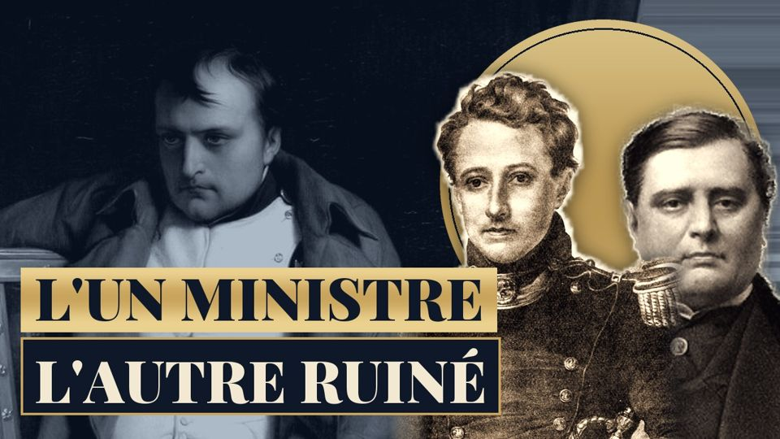
VL'un enterré au son du canon, ancien ministre. L'autre avec les indigents, sans tabac ni chemises.
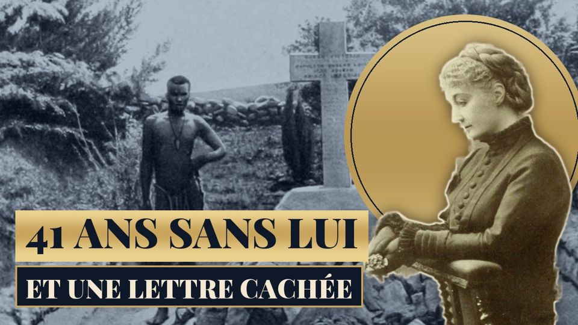
VIUn trône, un mari, un fils unique perdus. Et une lettre gardée quarante-sept ans dans un tiroir.
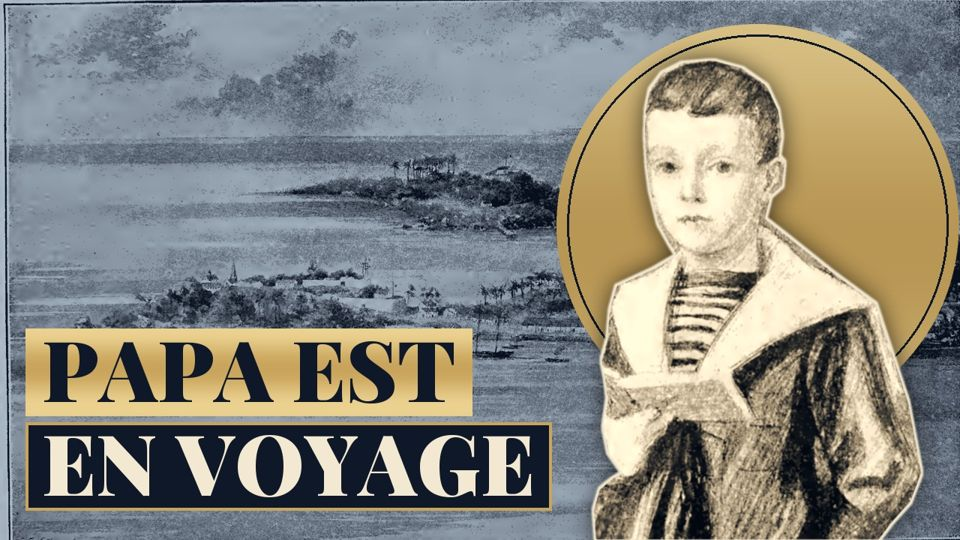
VIIINÉDIT« Ton voyage a été trop long », écrit un garçon de six ans à son père. La suite sera plus terrible encore.
Les journaux l'ont vue à Paris, puis dans un couvent espagnol. Elle était morte depuis onze ans.
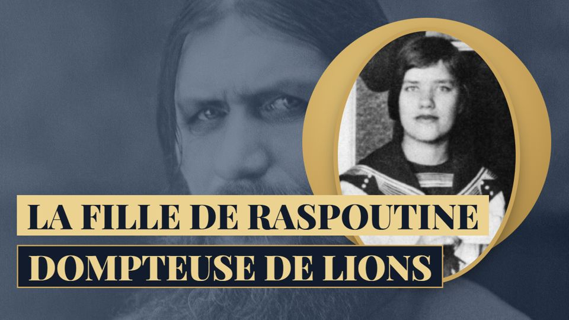
IXINÉDITElle a regardé un acteur rejouer l'assassinat de son père. Puis elle est entrée dans la cage aux lions.
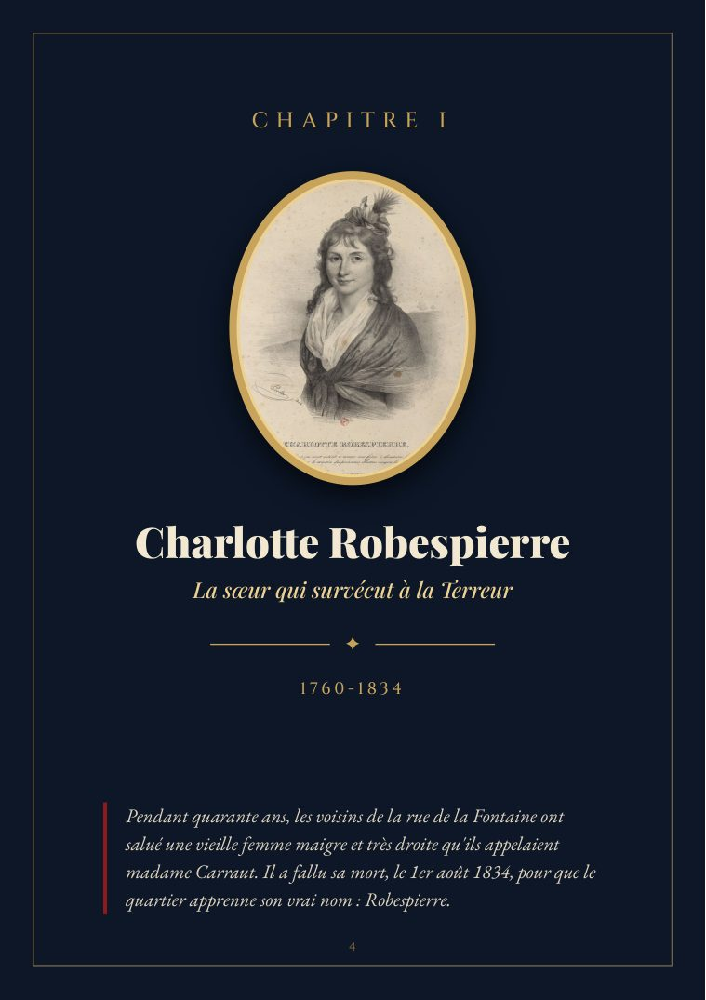
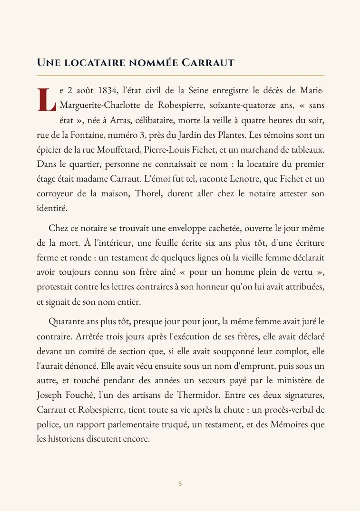
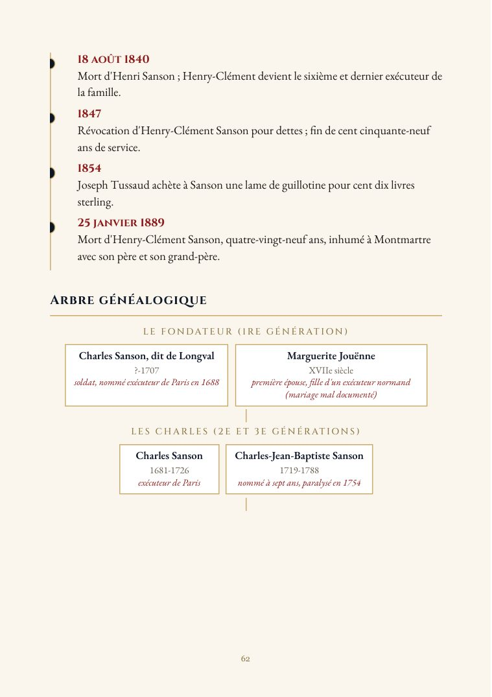
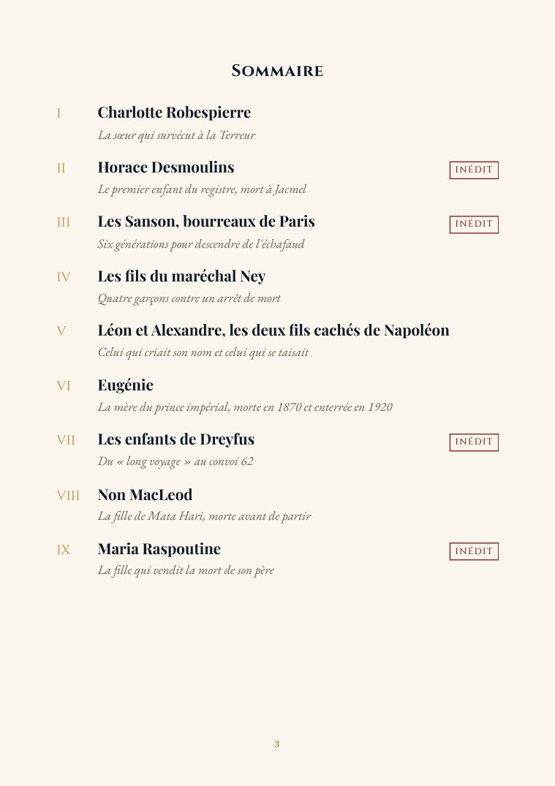
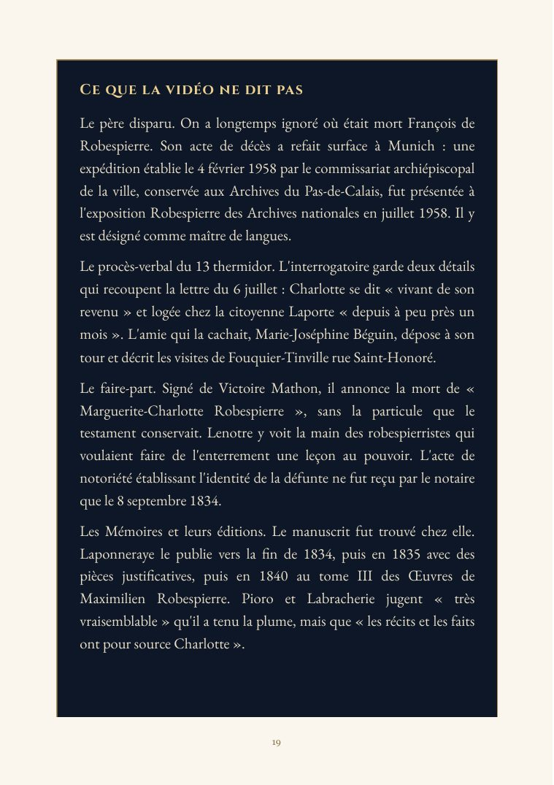
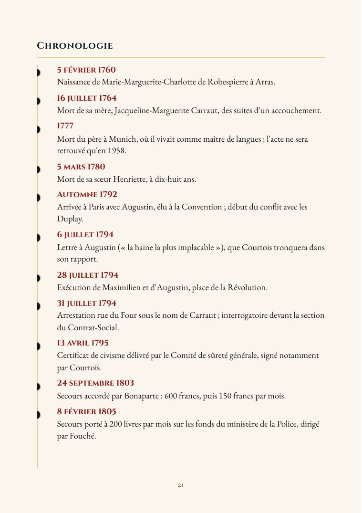
Elles n'ont jamais été racontées sur la chaîne. Elles existent uniquement dans ce dossier.
Mémoires de Charlotte Robespierre sur ses deux frères, Paris, 1835.
G. Lenotre, La Guillotine et les exécuteurs des arrêts criminels, Paris, Perrin, 1893.
Jules Claretie, Camille Desmoulins, Lucile Desmoulins, Paris, Plon, 1875.
Henri Welschinger, Le maréchal Ney, 1815, Paris, Plon, 1893.
Hector Fleischmann, Bâtard d'empereur, d'après les papiers du baron de Meneval, 1913.
Augustin Filon, Le Prince impérial, souvenirs et documents, Paris, Hachette, 1912.
Alfred Dreyfus, Cinq années de ma vie, Paris, Fasquelle, 1901.
Maria Rasputin, My Father, Londres, Cassell, 1934.
… et plus d'une centaine de références au total, listées chapitre par chapitre.
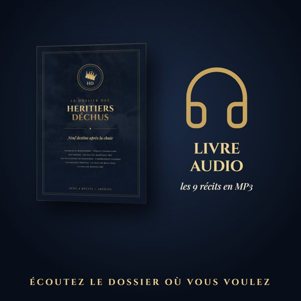
En option au moment du paiement : le livre audio. Les neuf récits lus en intégralité, plus de trois heures d'écoute en MP3, pour 9,90 € de plus.
Satisfait ou remboursé. Lisez le dossier. S'il ne vous apprend rien, demandez le remboursement dans les 7 jours : vous êtes remboursé intégralement, sans justification.
Un fichier PDF illustré de 193 pages, que vous téléchargez juste après le paiement. Il est à vous : vous pouvez le lire, le relire et le garder.
Oui. Le format a été pensé pour se lire confortablement sur téléphone, tablette, liseuse compatible PDF ou ordinateur. Vous pouvez aussi l'imprimer pour un usage personnel.
Non. Chaque chapitre va beaucoup plus loin que la vidéo correspondante, avec les détails qui n'ont pas tenu dans 25 minutes, une chronologie, un arbre généalogique et les sources. Et quatre des neuf récits n'ont jamais été publiés sur la chaîne.
Immédiatement. L'accès est envoyé par e-mail dès que le paiement est confirmé.
Oui. Le paiement est traité par Hotmart, une plateforme utilisée par des millions d'acheteurs dans le monde. Carte bancaire et PayPal acceptés selon votre pays.
Vous avez 7 jours pour demander le remboursement, directement depuis votre espace Hotmart. Sans justification.
Oui. Chaque nouvelle histoire publiée sur la chaîne viendra s'ajouter au dossier. Vous recevez la nouvelle version dans votre espace Hotmart, sans rien payer de plus : vous achetez une fois, la collection continue de grandir.
Une option proposée au moment du paiement : les neuf récits du dossier lus en intégralité, en MP3, pour les écouter en voiture, en marchant ou avant de dormir. Plus de trois heures d'écoute, pour 9,90 € de plus.
L'histoire retient ceux qui tombent. Ce dossier raconte ceux qui restent.
Je veux le dossier 19,90 €